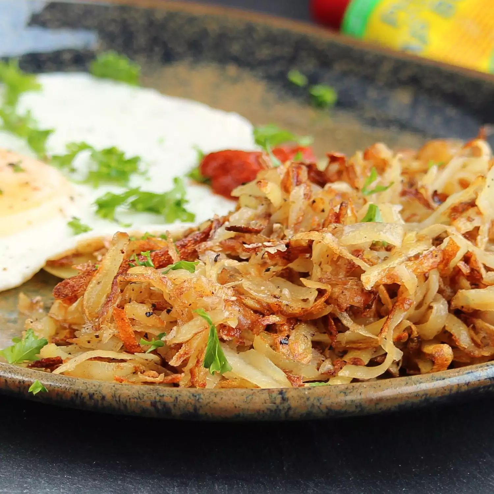

Hashbrowns
A crispy hashbrown recipe. Serves 2.
Ingredients
- 2 russet potatoes, peeled
- 3 tablespoons butter
- salt and pepper to taste
- 1 pinch cayenne pepper, or to taste
- 1 pinch paprika, or to taste
Steps
- Shred potatoes into a large bowl filled with cold water.
Stir until water is cloudy, drain, and cover potatoes
again with fresh cold water. Stir again to dissolve
excess starch. Drain potatoes well, pat dry with
paper towels, and squeeze out any excess moisture.
- Heat butter in a large pan over medium heat. Sprinkle
shredded potatoes into the hot butter and season with
salt, black pepper, cayenne pepper, and paprika.
- Cook potatoes until a brown crust forms at the bottom,
about 5 minutes. Continue to cook and stir until
potatoes are browned over, about 5 more minutes.